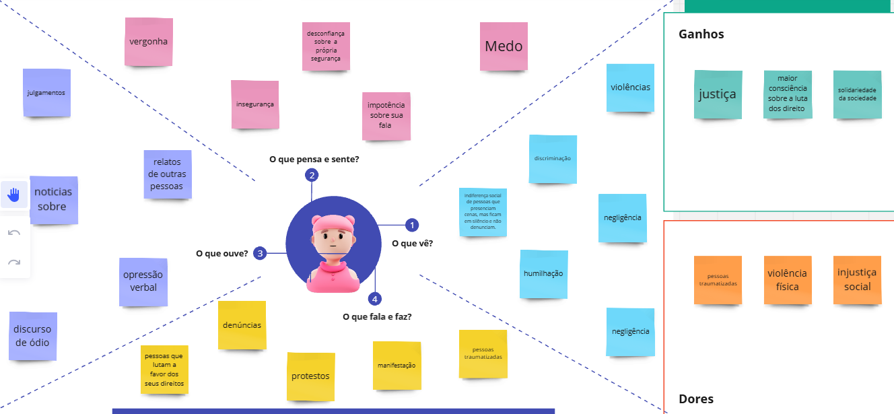

Entendendo o Usuário
O Mapa da Empatia ajuda a compreender as necessidades, sentimentos, preocupações e objetivos do nosso público-alvo. Ele nos permite criar uma solução mais humanizada e assertiva.
Para uma análise mais completa, foram elaborados dois mapas da empatia:
- O primeiro foi feito de forma individual, com cada membro do grupo refletindo sobre o tema do abuso de autoridade, com base em percepções pessoais e experiências.
- O segundo foi produzido após a aplicação de um formulário de pesquisa, que teve como objetivo validar o problema com dados reais da sociedade. As respostas foram analisadas e utilizadas para preencher o mapa de forma mais representativa e alinhada com a realidade dos usuários.
O que o usuário vê?
Usuários veem uma sociedade onde o abuso de autoridade é comum, mas pouco denunciado. Eles observam outras pessoas com medo de denunciar e a ineficácia dos canais existentes.
O que o usuário ouve?
Recebem conselhos para "deixar pra lá", escutam histórias de represálias e falta de punição aos agressores. Sentem que não há apoio institucional suficiente.
O que o usuário pensa e sente?
Medo, insegurança, frustração e impotência. Desejam justiça, apoio e a possibilidade de se expressar sem medo.
O que o usuário fala e faz?
Fala pouco sobre suas experiências por medo, evita se expor e não confia nos sistemas tradicionais. Em geral, opta pelo silêncio.
Suas dores
Medo de represálias, falta de confiança nos sistemas de denúncia, exposição da identidade, demora no processo.
Seus ganhos
Ter um canal que pode ser anônimo (se o usuário optar por essa forma), seguro e rápido para denunciar. Sentir-se ouvido, apoiado e representado. Ver que algo está sendo feito com sua denúncia.
Mapa Empatia individual
Mapa Empatia coletivo